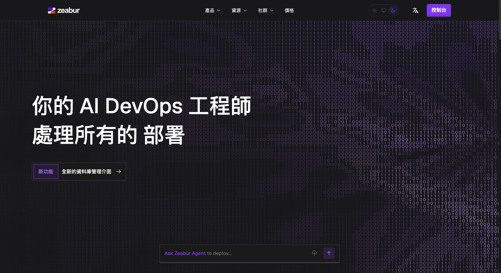
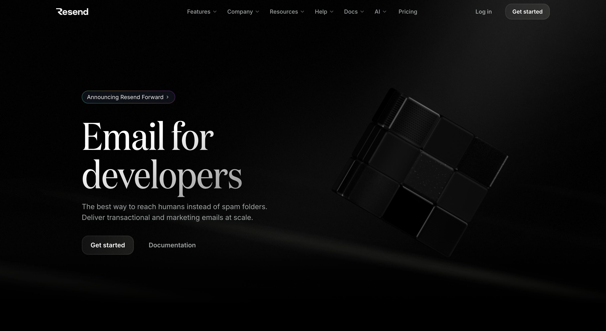
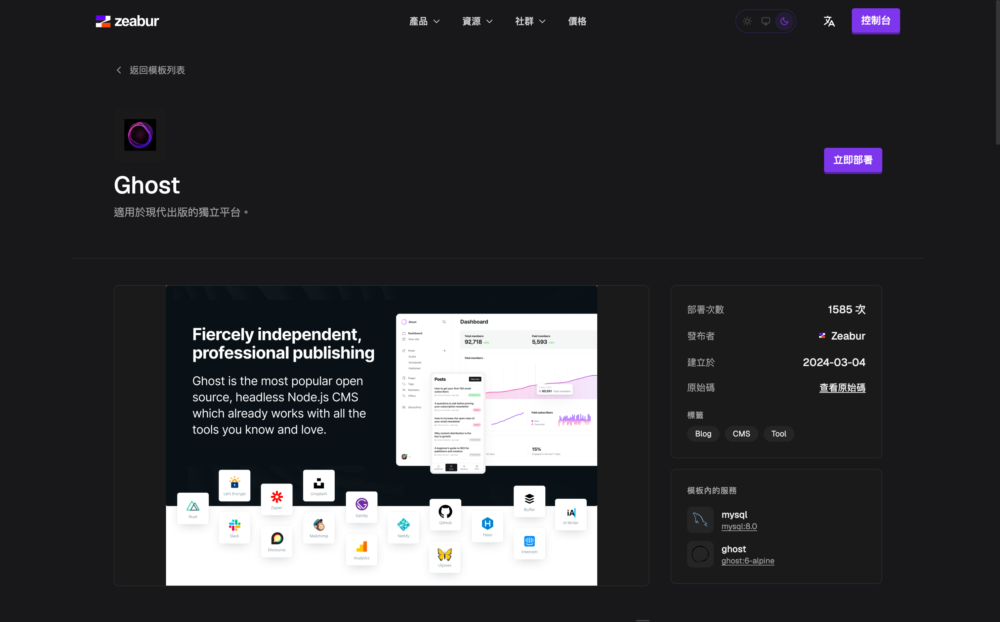

Ghost 自架筆記：Zeabur 部署與 Resend SMTP 設定

最近在評估公司部門的內容發佈平台時，除了既有的 Medium，也順手試了一下 Ghost 的自架流程。這次的目標沒有要馬上替換現有平台，主要是想先把 Ghost 跑起來，看看如果未來想要有一個自有網域、可控性更高的內容網站，實際部署時會碰到哪些問題。
原本以為 Ghost 這類成熟 CMS 應該很快就能完成部署，但實際測試後發現，網站本身跑起來不難，真正比較容易卡住的是 Email 設定。Ghost 後台邀請使用者、會員登入、密碼重設等流程，都需要能正常寄送系統信件。如果 SMTP 沒有設定好，網站雖然可以打開，但後台與會員相關功能就會不完整。
這篇主要記錄使用 Zeabur 部署 Ghost，並搭配 Resend 設定 SMTP 的過程。內容會以實作筆記的方式整理，從服務建立、環境變數設定到寄信設定，保留實際架設時需要注意的細節，方便之後需要重新檢查設定時回頭參考。
為什麼用 Zeabur 架 Ghost？
Ghost 可以部署在 VPS、Docker Compose 或其他雲端平台上。不過這次只是先做可行性測試，所以不想一開始就花太多時間處理主機維護、Nginx、SSL、資料庫連線與部署流程。

Zeabur 的好處是可以用比較低的成本快速把服務跑起來，部署後也能直接調整環境變數與服務設定。對這次測試來說，Zeabur 主要負責處理部署基礎，讓我可以把重點放在 Ghost 本身能不能順利運作，以及 SMTP 能不能正常寄信。
為什麼選擇使用 Resend？
Ghost 架起來之後，接下來要處理的就是寄信問題。一開始其實很容易想到 Gmail SMTP，畢竟手邊通常已經有 Gmail 帳號，也能透過應用程式密碼來寄信。不過，個人信箱服務比較適合日常收發信，拿來支撐自架服務的系統信件時，後續維護與問題排查會比較麻煩。因此這次還是選擇使用專門處理交易型信件的 Resend。

對 Ghost 這種需要寄送後台邀請、登入連結、密碼重設與會員確認信的服務來說，使用 transactional email provider 會比較合適。Resend 的設定方式相對單純，Ghost 只要透過 SMTP 設定，就能把系統信件交給 Resend。
費用也是這次會選 Resend 的原因之一。以目前這種測試環境或小規模內容平台來說，系統信件量通常不會太大，大多只是處理後台邀請、登入連結與會員確認信。Resend 提供的免費額度已經足夠支撐初期測試，不需要一開始就導入付費方案。等到未來真的開始有大量會員、訂閱或正式營運需求，再重新評估是否升級或改用其他寄信服務也比較務實。
Resend 的 SMTP 設定也很直覺。SMTP host 是 smtp.resend.com，username 固定使用 resend，password 則使用 API Key。對這次的自架測試來說，Resend 剛好可以補上 Ghost 所需的交易型信件寄送能力，也讓後續寄信設定與問題排查比較容易掌握。
Resend 在這裡負責什麼？
這裡先把 Email 的範圍釐清一下。Resend 在這次設定中，主要處理 Ghost 的交易型信件。像是後台邀請、登入連結、密碼重設、會員註冊確認，這些都屬於使用者操作後觸發的系統通知。
Ghost 的寄信功能可以先拆成兩個情境來看。第一個是後台邀請、登入連結、密碼重設、會員確認這類系統信件；第二個是把文章寄給大量訂閱者的 newsletter。這次使用 Resend SMTP，主要處理的是前者，也就是讓 Ghost 的基本系統流程可以正常寄信。至於 newsletter 的大量寄送，後續如果真的要啟用，再另外評估對應的寄信方案會比較合適。
建立 Ghost 服務
在 Zeabur 建立 Ghost 服務的流程不複雜，可以直接從 template 搜尋 Ghost，依照畫面建立服務。如果想要更明確控制版本，也可以使用 Ghost Docker image 自行建立服務。

建立完成後，建議先不要急著設定 SMTP。可以先確認 Ghost 網站前台可以正常打開，Ghost Admin 也可以正常進入。這一步看起來很基本，但很重要，因為如果網站本身還沒有正常啟動，就直接開始調整 Email，很容易讓問題混在一起。
我會建議先把部署問題與寄信問題拆開處理。第一階段只確認 Ghost 能不能正常跑起來，第二階段再確認 SMTP。這樣之後如果 log 裡出現錯誤，才比較容易判斷到底是 Ghost 啟動問題、環境變數問題，還是 SMTP 連線問題。
建立 Resend API Key
Ghost 服務能正常開啟後，就可以回到 Resend 設定寄信。這裡需要先建立 Resend 帳號，並設定寄件網域。正式使用時，寄件網域通常需要完成 DNS 驗證，例如 SPF、DKIM、DMARC 相關設定，這樣信件送出去後才比較不容易被收件端判定為可疑來源。
完成網域驗證後，在 Resend 後台建立一組 API Key。這組 API Key 之後會放到 Ghost 的 SMTP password 裡面。
Resend 的 SMTP 設定大致如下：
1 | |
在 Zeabur 設定 Ghost SMTP
接著回到 Zeabur 的 Ghost 服務設定頁，加入 Ghost 需要的 mail 環境變數。這次使用 465 port，並搭配 secure=true。
1 | |
這裡有幾個地方要注意。mail__options__auth__user 不是 Resend 登入信箱，也不是公司信箱，而是固定填 resend。mail__options__auth__pass 則是剛剛建立的 Resend API Key。mail__from 建議使用已經在 Resend 驗證過的網域信箱，例如 noreply@your-domain.com。
使用 SMTP 時，port 與加密方式要一起看。這次採用 465，所以 mail__options__secure 需要設為 true，讓 Ghost 透過 SSL 連線到 Resend。如果之後改用其他 port，例如 587，就要重新確認對應的 secure 設定，避免 port 與加密方式不一致，導致寄信時連線失敗。
修改環境變數後要重新部署
設定完環境變數後，記得重新部署或重新啟動 Ghost 服務。這一步很容易漏掉，因為環境變數通常是在服務啟動時讀取。如果只是改了 Zeabur 後台設定，但服務沒有重新啟動，Ghost 不一定會馬上套用新的 SMTP 設定。
重新啟動後，可以先從 Ghost Admin 測試邀請一位管理者，或測試會員登入流程。這類操作會觸發 Ghost 寄出系統信，是確認 SMTP 是否真的成功的最直接方式。
SMTP 成功不代表 Newsletter 成功
Ghost 的 SMTP 設定成功後，系統信件通常就能正常寄送。不過，如果要使用 Ghost 內建 newsletter 把文章大量寄給訂閱者，還需要另外處理 bulk email provider。
交易型信件是登入、邀請、密碼重設這類系統流程，這次用 Resend SMTP 主要就是處理這一塊。Newsletter 則是把文章寄給大量訂閱者，這部分在自架 Ghost 裡需要另外設定。以目前測試階段來說，我會先把系統信件處理好，電子報功能等到真的需要時再評估 Mailgun 或其他方案。
簡單檢查清單
這次整理下來，可以用下面這份清單快速確認 Ghost + Resend 是否設定完成：
1 | |
結語
這次架設下來，Ghost 本身部署並不複雜，主要需要注意的是寄信設定。只要 SMTP 的 host、port、secure、帳號、API Key 與寄件地址都設定正確，Ghost 就能透過 Resend 正常寄出系統信件。
以這次測試來說，Zeabur 負責快速把 Ghost 跑起來，Resend 則補上後台邀請、登入連結、密碼重設等交易型信件能力。這樣的組合很適合作為自架內容平台的初步測試環境。
另外，Ghost 的 SMTP 設定主要處理系統信件；如果之後要使用內建 newsletter 大量寄送文章，還需要再評估 Mailgun 或其他寄信方案。